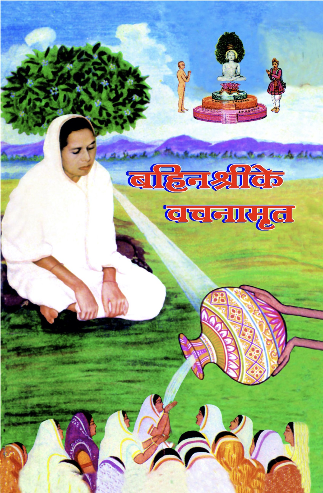
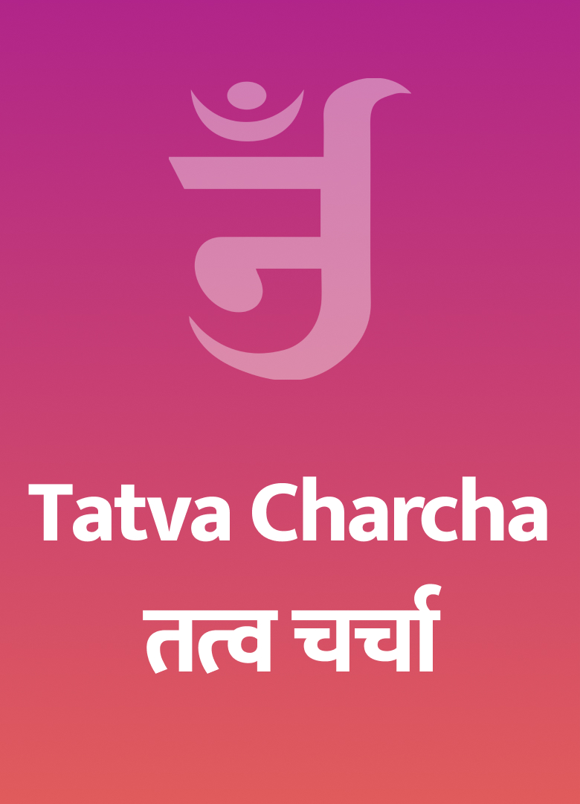
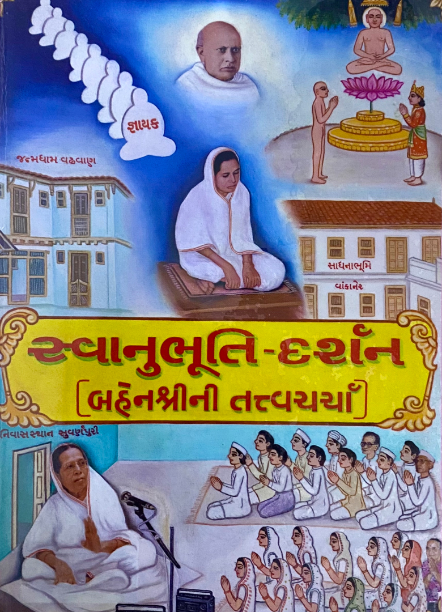
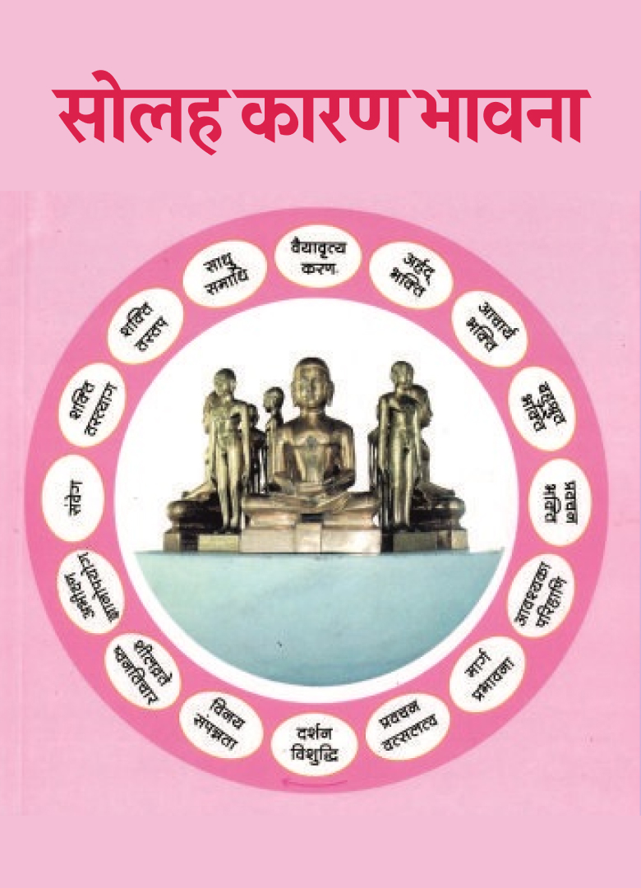
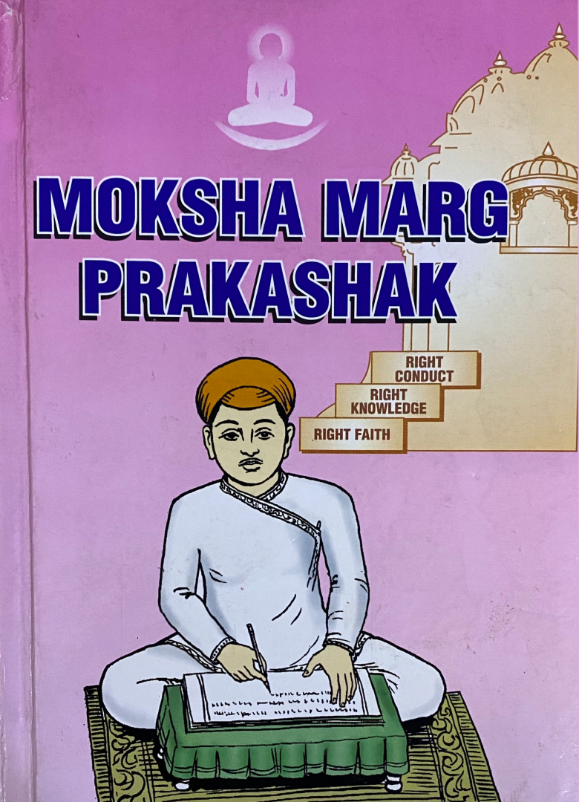
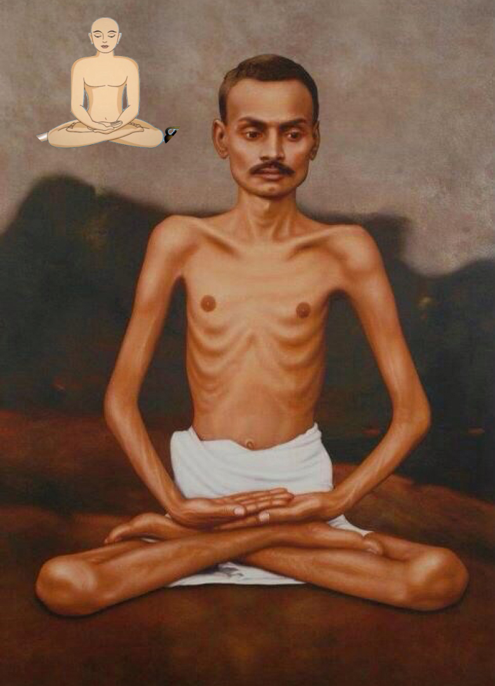
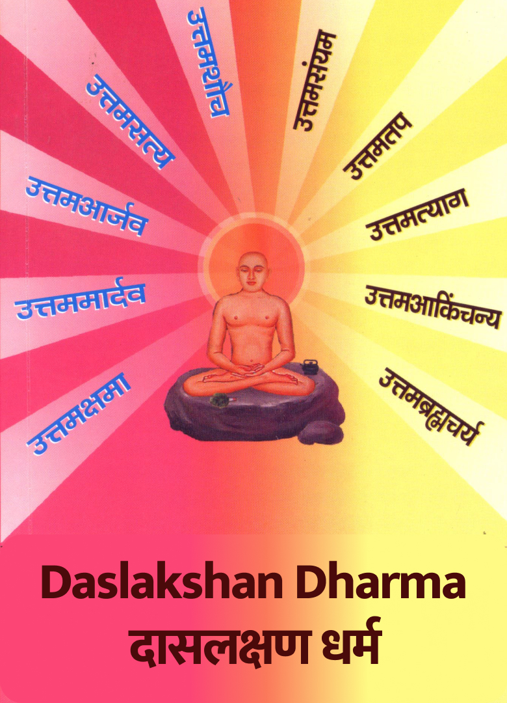
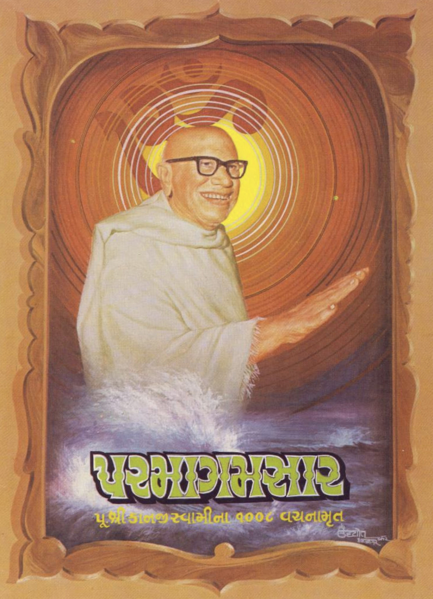
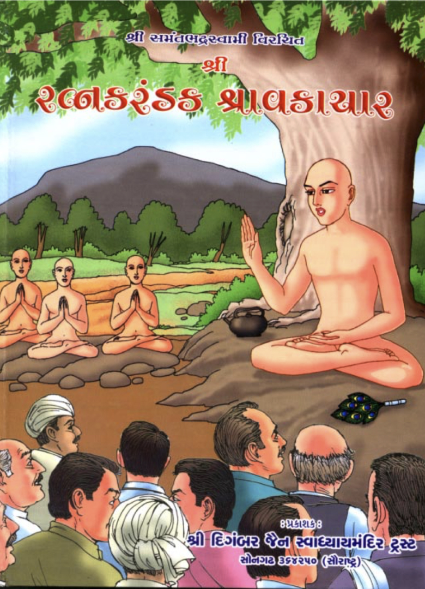
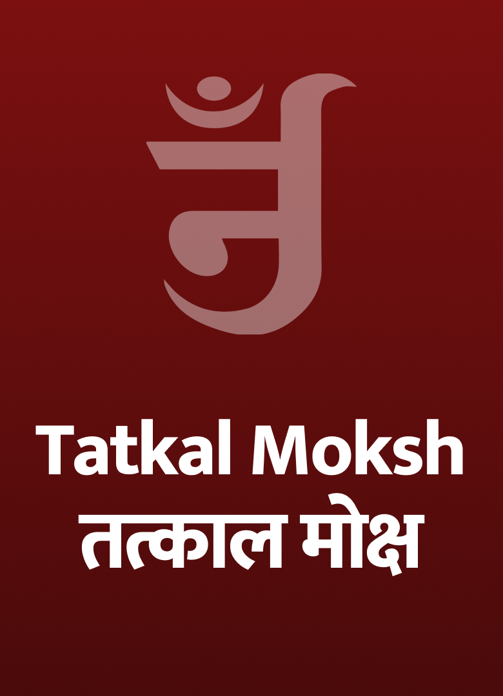

Discourses of Shri Devchand bhai Shah
An archive of spiritual discourses on Shrimad Rajchandra's Vachanamrut, Samaysar, Dravya Drushti Prakash and other texts, recorded 1994–2002.
 Shrimad Rajchandra Vachanamrut352 sittings · 1996–2002
Shrimad Rajchandra Vachanamrut352 sittings · 1996–2002
3 transcribed Shri Samaysar158 sittings · 1998–2002
Shri Samaysar158 sittings · 1998–2002
Benshri ke Vachanamrut148 sittings · 1998–2002 Gyangoshti91 sittings · 1998–2002
Gyangoshti91 sittings · 1998–2002
Tatva Charcha82 sittings · 1994–2002
Swanubhuti Darshan80 sittings · 1996–2002 Shri Dravya Drushti Prakash76 sittings · 1998–2002
Shri Dravya Drushti Prakash76 sittings · 1998–2002
10 transcribed Other discourses65 sittings · 1996–2002
Other discourses65 sittings · 1996–2002
1 transcribed- Dravya Drashti Jineshwar53 sittings · 2000

Solah Karan Bhavna43 sittings · 1999
Moksh Marg Prakashak41 sittings · 1999–2000
Apoorva Avasar40 sittings · 1999–2002
Daslakshan Dharma28 sittings · 2001–2002
Shri Parmagamsar18 sittings · 1994–2002
Shri Ratnakaranda Shravakachar17 sittings · 1999–2002- Darshanmoha7 sittings · 1996–1998
- Sahajanand Patrasudha6 sittings · 1999
- Adhyatma Ganga5 sittings · 2000–2002
- Bhedgnan4 sittings · 1994–2001
- Prayojan Siddhi4 sittings · 1999
- Bhakti3 sittings · 1996–2002
- Shri Anubhav Prakash3 sittings · 1999–2000

Tatkalmoksha3 sittings · 2002- Samadhi Tantra2 sittings · 1998
- Drashti ke Nidhan2 sittings · 2000
- Shri Samaysar Kalash2 sittings · 2002
- Guru Vinay2 sittings · 2002
- Bhavnabodh1 sitting · 1998
- Natak Samaysar1 sitting · 2002